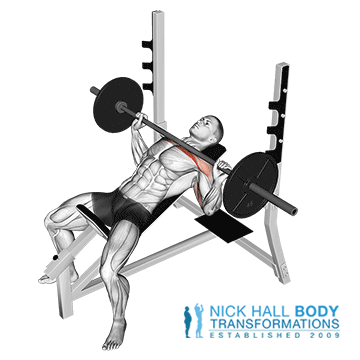

Incline barbell bench press je različica bench pressa. Je odlična vaja za moč in jačanje prsenga koša in jedra. Primarne mišične skupine, ki sodelujejo pri vaji so: prsi, ramena, tricepsi.
Lezite na nagibno klop in položite roke na drog, pri čemer ga primete nekoliko širše od širine ramen. Stopala postavite na tla v liniji ali za kolena. Ustvarite lok v spodnjem delu hrbta in potisnite prsni koš navzgor. Dvignite drog iz stojala, tako da bo nad prsmi. Spustite drog neposredno navzdol proti prsnemu košu, pri čemer so komolci usmerjeni približno pod kotom 45 stopinj. Ko drog doseže prsni koš, ustavite se, nato pa ga ponovno potisnite navzgor. Nadaljujte, dokler ne dokončate vseh ponovitev, nato pa vrnite drog nazaj na stojalo.
Trajanje: minut
Kalorije: kcal
Vrsta:
Težavnost:
Kratek opis: